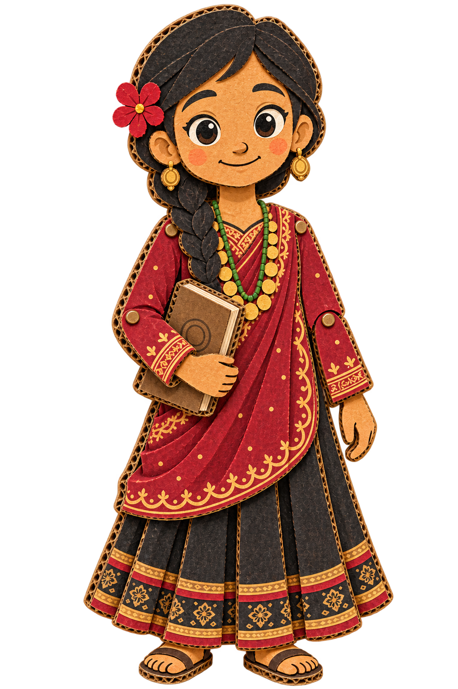
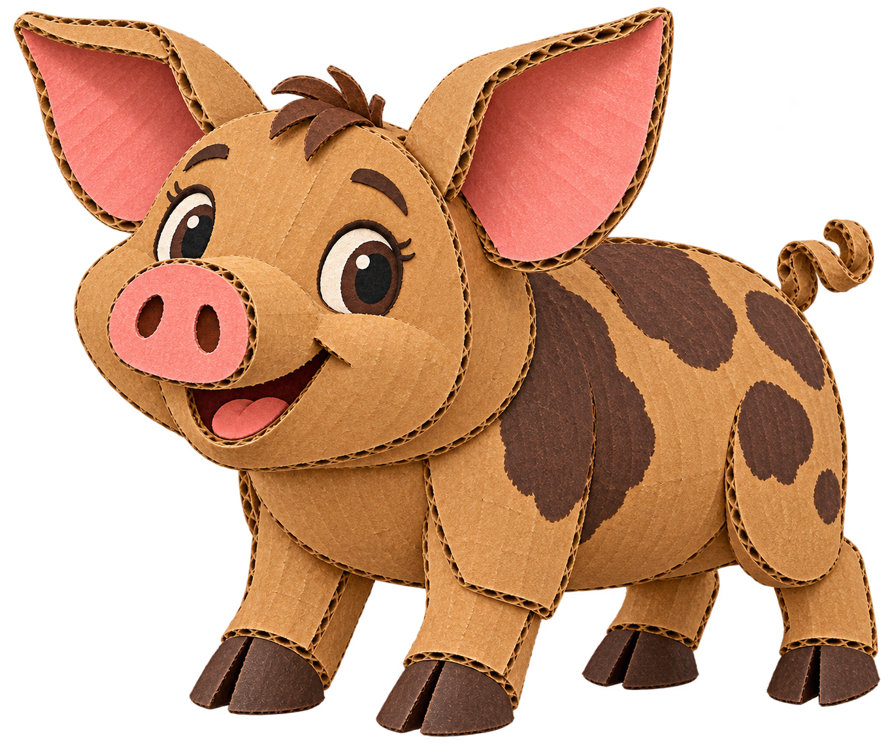
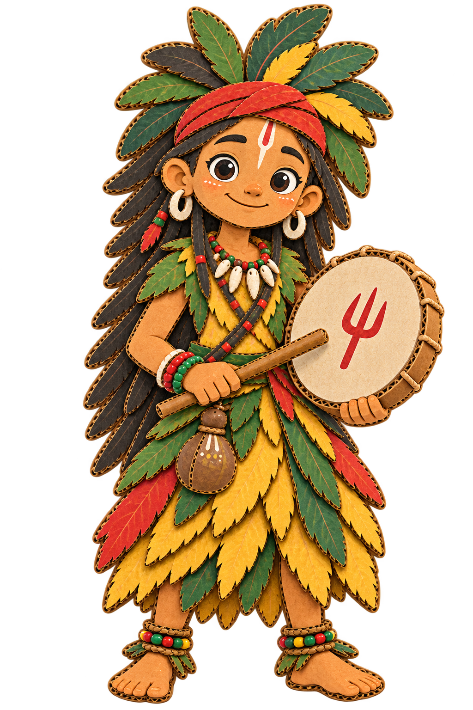
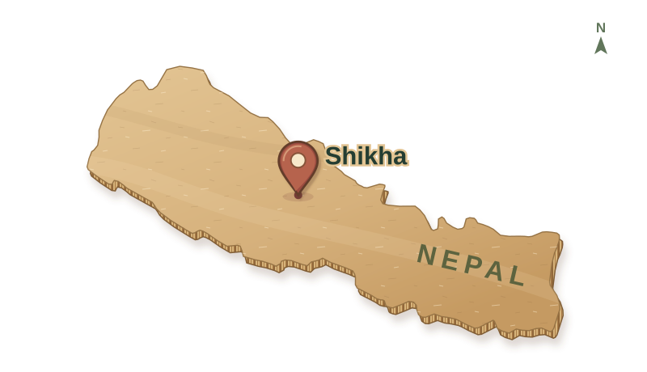
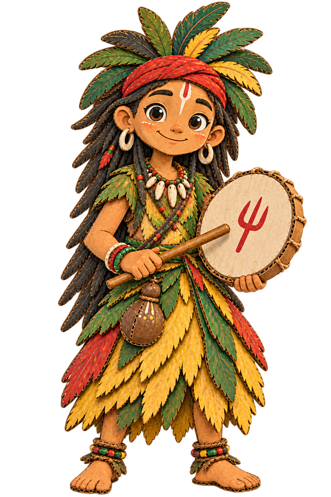
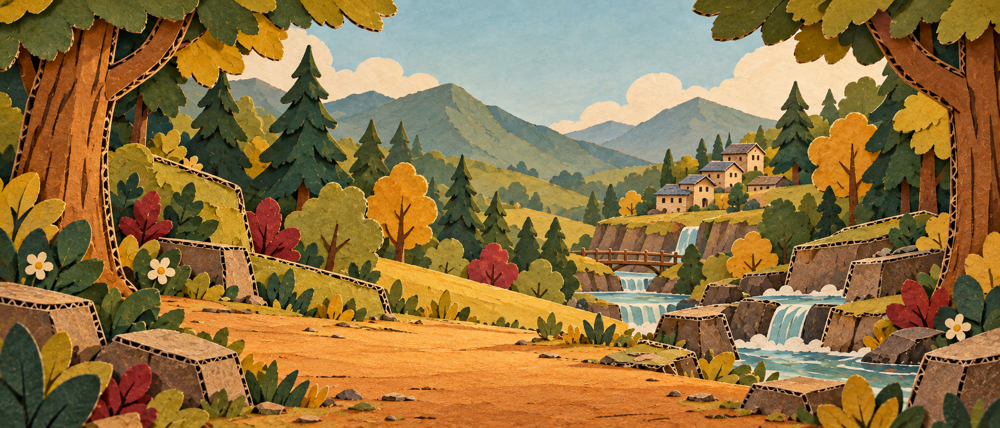

01
Observation & memory
Maya
Thoughtful and observant, Maya connects the clues. Her Spiral Journal gathers songs, stories and drawings, helping her notice patterns as she learns.
My Village Shikha
Gathering the forest…
An animated series in development
A forest full of stories.
Maya, Mukunda and Pintu follow rhythms, patterns and little surprises through a forest where every connection matters.
By moonlight, Bhumi listens to the forest. Follow quiet paths, gentle signs and the small creatures waking beneath the trees.



01 / The world
A remembered song. A quiet spring. A path almost forgotten.
In this world, a mystery begins with noticing. The children listen to the forest and to the people who remember it, learning how stories, places and living things belong together.
Bhumi offers small, playful signs along the way. The Forest Spirit is the greater benevolent presence in this world; Bhumi guides the children toward discoveries they must make for themselves.
Every place holds a story.
Every story holds a connection.

02 / Meet the characters
Curiosity, memory, rhythm and instinct.
Everyone notices something different.
Observation & memory
Thoughtful and observant, Maya connects the clues. Her Spiral Journal gathers songs, stories and drawings, helping her notice patterns as she learns.
Curiosity & rhythm
Energetic and first toward a mystery, Mukunda brings action and curiosity. The rhythms of his madal teach him to slow down and listen.
Instinct & a little mischief
Pintu senses changes before the others do. This funny animal companion follows instinct, finding clues and bringing comedy without a single spoken explanation.
Stories & remembered songs
Aama keeps stories, old songs, place names and memories. She helps the children understand forgotten histories, leaving room for them to find their own way.

Wonder & gentle guidance
Playful, mysterious and compassionate, Bhumi is already part of the forest. Small signs help the children listen and discover, rather than handing them a solution.
03 / The spiral
Draw your connection to the forest.
Draw one continuous spiral with your finger or mouse. Curl around twice, following the faint guide. You can begin at the center or work your way inward.
A complete spiral means connection and balance. When it is interrupted, a relationship needs care.
The forest is listening. Draw a spiral on the paper.
Focus the paper. Press Enter or Space to begin, use the arrow keys to draw, then Enter or Space to finish. Hold Shift for finer steps. Escape clears the page.

The first adventure04 / Pilot story
The forest has fallen quiet.
What is it waiting for them to hear?
Aama begins with a lesson in respectful acknowledgment and listening. When the children notice an interrupted spiral, they follow small signs from Bhumi and discover the history of a forgotten place.
By learning to care for it, they find their way back to a complete rhythm, and Maya records her first journal page.
The heart of the series
Small adventures with room for curiosity, care and the memories that connect generations.
A rhythm, a feeling, a quiet change. Understanding begins with attention.
Stories and songs carry the histories of people and places into the present.
The children grow by tending relationships with one another and the forest.